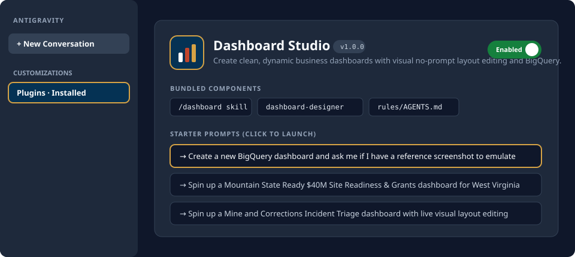
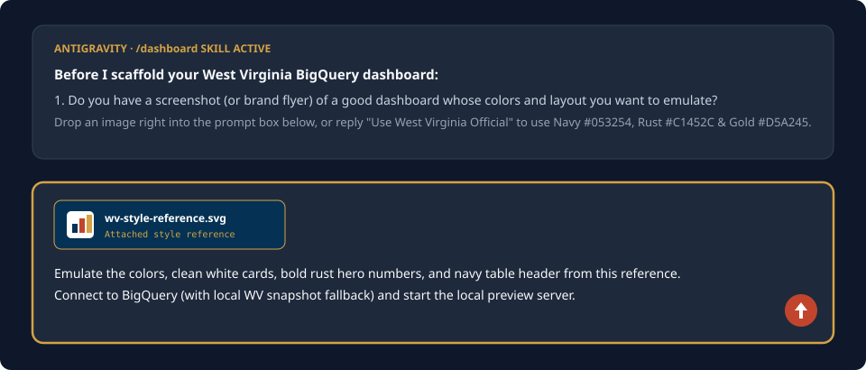
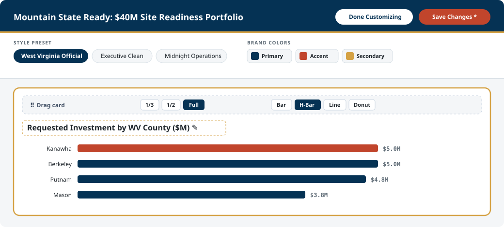

Hidden for participants: Dashed blue boxes like this appear only when ?review is in the URL. Toggle them off in the top bar to preview the exact participant view.
Tailored for the State of West Virginia: Styled in West Virginia's official Fira Sans + Navy (#053254), Rust (#C1452C), and Gold (#D5A245) system, with two hands-on WV tracks: Track A (Mountain State Ready $40M Site Readiness & Grants) and Track B (Mine & Corrections Incident Report Triage).
Zero-blocker BigQuery design: BigQuery is the default database connector via keyless gcloud auth application-default login, paired with a bundled local WV BigQuery snapshot so participants without cloud IAM or venue Wi-Fi never stall.
State of West Virginia · Hands-On Business Analytics Workshop
Build Live Dashboards with Antigravity
In 60 minutes you will install the Dashboard Studio plugin in Google Antigravity, emulate a reference dashboard screenshot, connect to Google BigQuery (and other agency databases), and rearrange cards, chart types, and brand colors visually in Chrome—without writing code or burning prompts on layout tweaks.
Track A finished build: Mountain State Ready ($40M Site Readiness Portfolio) running locally in Chrome with one-click visual layout editing.
Why Dashboard Studio feels different
Use AI where AI shines (SQL, data modeling, screenshot extraction) and direct visual clicks where humans are faster (layout, chart types, colors).
EmulateDrop a screenshot of a dashboard you like so the agent extracts its palette and structure.
ConnectPoint at BigQuery by default (or Postgres, MySQL, DuckDB, or CSV) with read-only SQL.
CustomizeClick Customize Layout in Chrome to drag cards, resize widths, and swap chart types visually.
Save & ExtendClick Save Changes to update dashboard.config.json—future data prompts keep your layout.
Today's agenda
Times are from the start of the session.
Welcome & live tourWhy spec-driven dashboards beat 20 rounds of "move that chart slightly left" prompting
Setup checkAntigravity open, Node.js ready, Dashboard Studio plugin zip downloaded
Lab 1: Install the Dashboard Studio pluginSteps 1–2 (about 12 minutes). Validate, install, and verify /dashboard in Antigravity.
Lab 2: Spin up your West Virginia dashboardSteps 3–6 (about 20 minutes). Emulate a reference screenshot, connect BigQuery, and open in Chrome.
Lab 3: Customize visually & connect more dataSteps 7–10 (about 15 minutes). Drag cards, switch charts with zero prompts, add a metric, and audit accuracy.
Showcase & wrap-upTwo participants share their customized dashboards and takeaways
Before you arrive
Complete this 10-minute check before the session so your laptop is ready to build immediately.
Facilitator noteBecause Dashboard Studio uses only built-in Node.js modules (node:http, node:fs, node:crypto), participants never run npm install at the venue—saving ~200 MB of conference Wi-Fi bandwidth per person.
Setup check
At 0:06 we will verify these four items together.
Lab 1: Install the Dashboard Studio plugin
About 12 minutes. Install a reusable Antigravity plugin bundle containing the /dashboard skill, design subagent, and BigQuery connector.
How Antigravity plugins work
Following the official Antigravity Plugin Quickstart, a plugin packages skills (skills/dashboard/SKILL.md), subagents, and guardrails behind a single plugin.json manifest. Install it once and every project on your laptop gains the /dashboard workflow.
1Unzip dashboard-studio-plugin.zip in your Downloads folder so you have a folder named dashboard-studio.
2Open Terminal (Mac) or PowerShell (Windows) and run the official Antigravity plugin validator and installer:
Mac / Linux · Terminal
cd ~/Downloads
agy plugin validate --strict ./dashboard-studio
agy plugin install ./dashboard-studio
agy plugin list
Windows · PowerShell
cd $HOME\Downloads
agy plugin validate --strict .\dashboard-studio
agy plugin install .\dashboard-studio
agy plugin list
Prefer not to touch the terminal? Ask Antigravity to install it for you
Paste this into any Antigravity chat instead: Unzip dashboard-studio-plugin.zip from my Downloads folder, run agy plugin validate --strict on it, and install it into ~/.gemini/config/plugins/dashboard-studio.

In Antigravity, open Customizations → Plugins → Installed to see Dashboard Studio enabled with its three starter prompt chips.
Checkpointagy plugin validate --strict reports Validation passed, and Dashboard Studio appears under Customizations → Installed (or when you type /dash in chat).
STEP2
Create your workspace folder & check two settings
About 5 minutes
Create a dedicated folder where your West Virginia dashboard files and configuration will live.
In Antigravity's left sidebar next to Projects, click Create New Project → New Project.
In Documents, create a new folder named wv-dashboard and click Open (or Select Folder on Windows).
Under the prompt box, click the shield icon and confirm Default (Ask before sensitive operations) is selected.
Click the model selector and choose Gemini 3.8 Flash for fast, quota-friendly iteration.
Checkpointwv-dashboard is selected above the prompt box, permissions say Default, and your model is Gemini 3.8 Flash.
Lab 2: Spin up your West Virginia dashboard
About 20 minutes. Choose a real State of West Virginia scenario, emulate a reference screenshot, wire up BigQuery, and launch your live dashboard.
STEP3
Invoke /dashboard and pick your West Virginia track
About 5 minutes
Type /dashboard in the prompt box—you will see the skill from your newly installed plugin light up. Pick either Track A or Track B below and send the prompt:
TRACK AEconomic Development · Mountain State Ready ($40M Site Readiness & Grants)
Tracks WVEDA's $25M Shell Building Loan Program and IJDC's $15M Tier 1–3 Site Readiness Grant Program across West Virginia counties ahead of the December 31, 2026 Round 1 close.
/dashboard I want to create a Mountain State Ready $40M Site Readiness & Grants executive dashboard for West Virginia, connected to BigQuery by default. Ask me for my reference style screenshot before scaffolding.
Tracks automated triage across Mine Incident Reports and DCR Operations Reports: critical director alerts vs. routine archived reports, 3–4 minute alert SLA latency, fail-safe holds, and zero-Spam verification.
/dashboard I want to create a Mine and Corrections Incident Report Triage operations dashboard for West Virginia leadership, connected to BigQuery by default. Ask me for my reference style screenshot before scaffolding.
CheckpointAntigravity loads the dashboard skill and pauses to ask whether you have a screenshot of a dashboard or brand flyer you want to emulate.
STEP4
Give the agent a reference screenshot to emulate
About 5 minutes
Instead of writing paragraphs describing hex codes, borders, and font weights, drop a picture of a clean dashboard (or agency brand sheet) straight into the chat box.
Drag your own dashboard screenshot (PNG/JPG/PDF) orwv-style-reference.svg into Antigravity's prompt box.
Paste the reply below and press Enter:
Reply with your style reference
Emulate the clean executive style in this reference image: extract its primary header color, accent KPI highlight color, neutral background, card borders, and typography feel into dashboard.config.json. Use BigQuery as the default connector with the built-in West Virginia snapshot fallback, scaffold the project, and start the local preview server.

Multimodal vision reads your reference image and writes clean hex tokens directly into dashboard.config.json.
CheckpointApprove the scaffold command when asked. Your wv-dashboard folder now contains dashboard.config.json, data/snapshot.json, and server.mjs.
STEP5
BigQuery connection: Live Cloud or Instant Workshop Snapshot
About 5 minutes
Dashboard Studio sets Google BigQuery as your default connector with read-only SQL and a 1 GB billed-bytes safety cap.
Nothing extra to configure! When GCP_PROJECT_ID is unset in .env, query_connector.mjs automatically serves your local BigQuery-shaped West Virginia dataset (BIGQUERY · SNAPSHOT) so you can keep moving immediately.
Path 2 · Connect Live BigQuery (If you have a GCP Project)
Authenticate with Application Default Credentials—no downloaded JSON keys needed:
gcloud auth application-default login
Then copy .env.example to .env, set GCP_PROJECT_ID=your-project-id, and click Refresh Data in the dashboard header.
Keep credentials out of chatNever paste database passwords or API keys into the chat window. Put project IDs and connection settings inside wv-dashboard/.env, which .gitignore excludes from version control automatically.
STEP6
Open your live dashboard in Chrome
About 5 minutes
Click (or copy into Chrome) the local preview URL Antigravity printed: http://127.0.0.1:4173.
Try the interactive controls in View Mode:
Click the Program or Readiness Tier (Track A) / Report Stream (Track B) filter pills—watch all 4 KPI cards, charts, and table rows recompute live.
Type Kanawha or Board Ready (Track A) / Critical (Track B) into the search box.
Click any column header in the bottom register table to sort ascending or descending.
CheckpointYour dashboard is live at http://127.0.0.1:4173 in Chrome with interactive filters, sortable columns, and your emulated color palette.
Your BigQuery-ready West Virginia dashboard is live.
Next comes the superpower for business users: redesigning layout, widths, chart types, and colors right inside Chrome—with zero prompting.
Lab 3: Customize layout without prompting & connect more data
About 18 minutes. Reshape your dashboard visually in seconds, then watch Antigravity add a new SQL metric without disturbing your visual layout.
Why spec-driven editing matters
Every visual edit you make in Chrome saves cleanly into dashboard.config.json. That means business users own the look and layout directly, while Antigravity owns the SQL and data plumbing underneath.
STEP7
Rearrange cards, chart types, and colors with zero prompts
About 6 minutes
1In the top-right corner of your dashboard in Chrome, click Customize Layout. The Visual Design Drawer opens.
2On the first chart card, click H-Bar (Horizontal Bar) and click Full so it spans all 12 columns.
3Grab ⠿ Drag card on any widget (or use the ← / → buttons) to reorder two cards on the page.
Click the dashboard title or any chart heading—type a sharper executive title and press Enter.
Test switching between West Virginia Official, Midnight Operations, and Appalachian Forest (or tweak a color swatch), then pick your favorite.
Click the rust Save Changes * button in the top bar.

Every layout, width, chart-type, title, and color change happens in one click and writes straight back to dashboard.config.json.
CheckpointA toast confirms Saved layout and theme to dashboard.config.json. Refresh Chrome (Cmd+R or Ctrl+R)—every visual change stayed saved, and you used zero prompts.
STEP8
Add a new metric via chat—without losing your visual edits
About 5 minutes
When you need a new calculated field or SQL aggregation, send one concise data prompt in Antigravity. Because the plugin's rules require reading dashboard.config.json first, your custom card widths, order, and colors stay untouched.
Prompt (works for both Track A and Track B)
Read my current dashboard.config.json first so you preserve all my saved layout, chartType, width, and theme edits. Add one new half-width chart widget comparing projected efficiency by county or category, update data/snapshot.json and the parameterized BigQuery SQL query to support it, and keep my server running.
CheckpointRefresh Chrome: your new chart appears alongside your existing cards, and your Step 7 layout, renamed headings, and theme colors are all still intact.
STEP9
Connect other databases (PostgreSQL, MySQL, DuckDB, or CSV)
About 4 minutes
BigQuery is the default, but agencies frequently combine warehouse tables with operational databases or spreadsheet exports. Try switching or adding a local CSV data source in one step:
Test the multi-connector workflow
Export the current records in data/snapshot.json to data/agency_export.csv, add two new West Virginia rows to that CSV, and run query_connector.mjs with DASHBOARD_CONNECTOR=csv and CSV_PATH=./data/agency_export.csv so my dashboard loads from the CSV.
Supported out of the boxSet DASHBOARD_CONNECTOR in .env to bigquery (default), postgres (Cloud SQL / AlloyDB / PostgreSQL), mysql, duckdb, or csv. Every connector enforces read-only queries.
STEP10
Verify numbers before briefing leadership
About 3 minutes
Before sharing any AI-assisted dashboard with cabinet leadership, county authorities, or the public, run this 60-second verification pass:
Executive QA checklist
Spot-check headline KPIs against source rules: For example, in Track A, verify that Shell Building Loans ($25M) + Site Readiness Grants ($15M) = $40M, and the Round 1 deadline reads December 31, 2026.
Filter math check: Click a single filter pill (such as Site Readiness Grant ($15M)) and confirm the KPI sum matches the visible rows in the table.
Read-only SQL check: Open dashboard.config.json → queries and confirm every statement is a parameterized SELECT.
You installed a plugin and shipped a live West Virginia dashboard.
You emulated a visual reference, wired up BigQuery-ready data, customized your layout in Chrome with zero prompting, and verified the numbers.
Make it your own
Finished early? Try one of these single-sentence upgrades.
Public BigQuery Dataset Live Query
"Point my dashboard at bigquery-public-data.usa_names.usa_1910_current filtered to state = 'WV' and show top names by decade."
Print-Ready Briefing Layout
"Add a clean @media print stylesheet in styles.css that hides filter buttons and prints my KPIs and charts on one landscape page for leadership packets."
Emulate Your Own Agency Screenshot
Take a screenshot of an existing Looker, Power BI, Tableau, or PDF report on your laptop, drop it into chat, and ask /dashboard to match its exact palette.
Threshold Highlighting
"Highlight any county row in the register table where projected jobs exceed 150 with a subtle gold badge."
Showcase at 0:57
Two or three participants share their customized dashboards for 2 minutes each.
What to show
Which track (or custom dataset) you picked
The screenshot or theme you emulated
One layout or chart change you made visually without prompting
Exporting your config
Click Export Config in your dashboard header to save a portable copy of dashboard.config.json you can share with teammates.
After today
Everything you installed and built stays on your laptop.
Reuse /dashboard in any project
Because Dashboard Studio is installed globally in Antigravity, open any new folder next week and type /dashboard to spin up a fresh tracker in under two minutes.
Restarting your preview later
Open your wv-dashboard project in Antigravity and say: Start node server.mjs and give me the preview link.
Hit a snag? Expand the matching question below or download a ready-to-run starter bundle.
agy: command not found when installing the plugin
Open Antigravity and ask the agent in chat: "Copy the unzipped dashboard-studio folder from my Downloads directory into ~/.gemini/config/plugins/dashboard-studio." Antigravity discovers plugins in that folder automatically on your next turn.
Typing /dashboard doesn't show the skill yet
Start a New Conversation (or reload the window with Cmd+R / Ctrl+R) after installing the plugin so Antigravity refreshes its skill menu.
Port 4173 is already in use
server.mjs automatically steps up to the next free port (4174, 4175, etc.). Check the exact http://127.0.0.1:XXXX URL printed in Antigravity's reply.
Clicking "Save Changes" says "Could not save layout"
Make sure node server.mjs is still running in Antigravity, then refresh Chrome once so it picks up a fresh session token and click Save Changes again.
BigQuery says credentials are not configured
That's expected if you haven't run gcloud auth application-default login yet—your dashboard automatically falls back to data/snapshot.json so every chart and filter still works.
Downloadable plugin & catch-up starter ZIPs
Fell behind or out of quota? Download Track A or Track B below, unzip its files directly into your empty Documents/wv-dashboard folder (so server.mjs sits inside wv-dashboard/), and run node server.mjs.